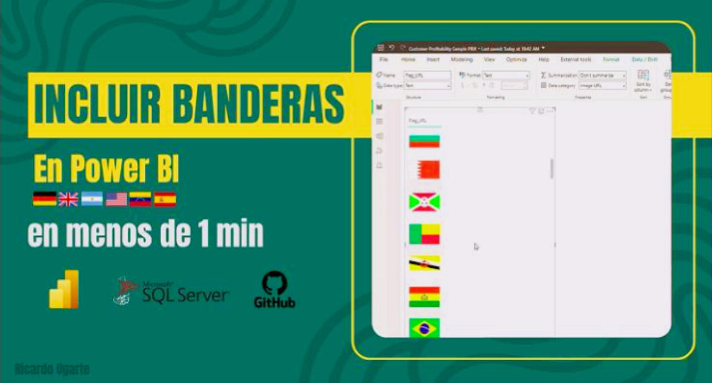

Power Apps
24 de octubre, 2025
Incorporar banderas de países 🎌en sus reportes de Power BI de manera eficiente
Al desarrollar visualizaciones para análisis regionales o globales, incluir banderas mejora la identificación de países. Sin embargo, obtener y mantener estos recursos de forma manual puede resultar poco práctico.
 Analista de Datos
Analista de Datos